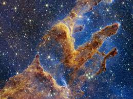

Voici la nébuleuses du crabe
Dans ce dernier chapitre, nous verrons les nébuleuses. Ce sont des objets célestes composés de gaz ou de poussières interstellaires. Comme vous avez pu le voir dans le chapitre précédent, les étoiles ont une durée de vie limitée, mais si elles meurent, il faut bien qu'elles puissent se former. Les nébuleuses sont donc des lieux de création d'étoiles, mais elles sont également un type de mort d'étoile. Pour tous les passionnés d'astronomie, ce sont des objets spectaculaires dû à leur couleur et à leur forme très impressionnantes.
Voilà, il s'agissait du dernier chapitre. J'espère que cela vous aura plu et que maintenant vous comprendrez mieux pourquoi j'aime tant l'astronomie.
Retour au début- 
Il s'agit des pilliers de la création situé dans la nébuleuse de l'aigle